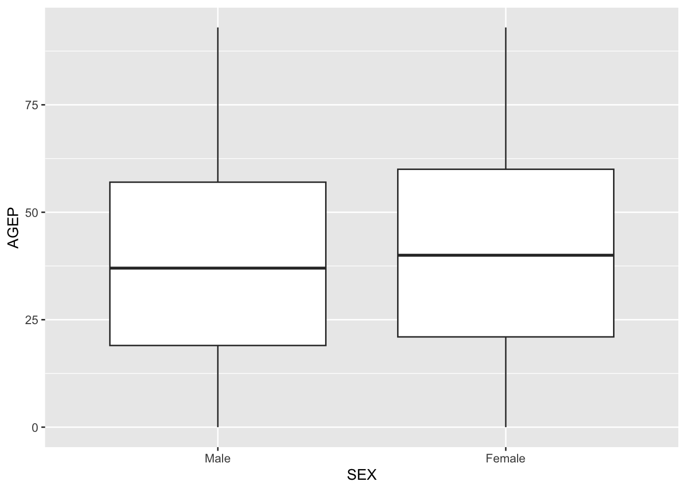
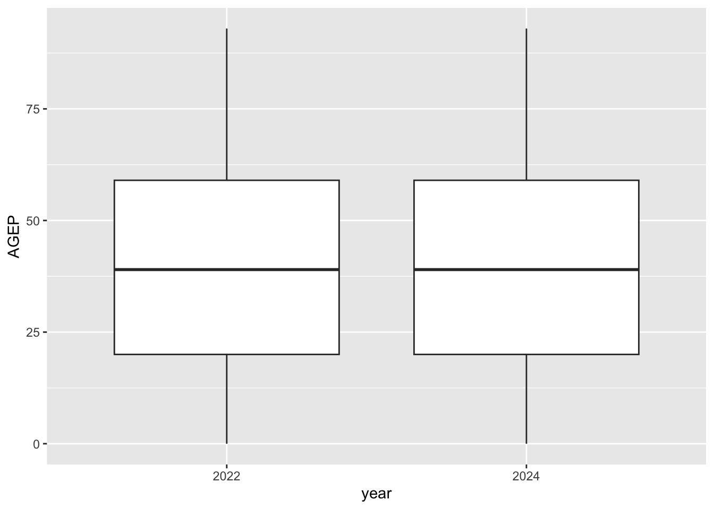
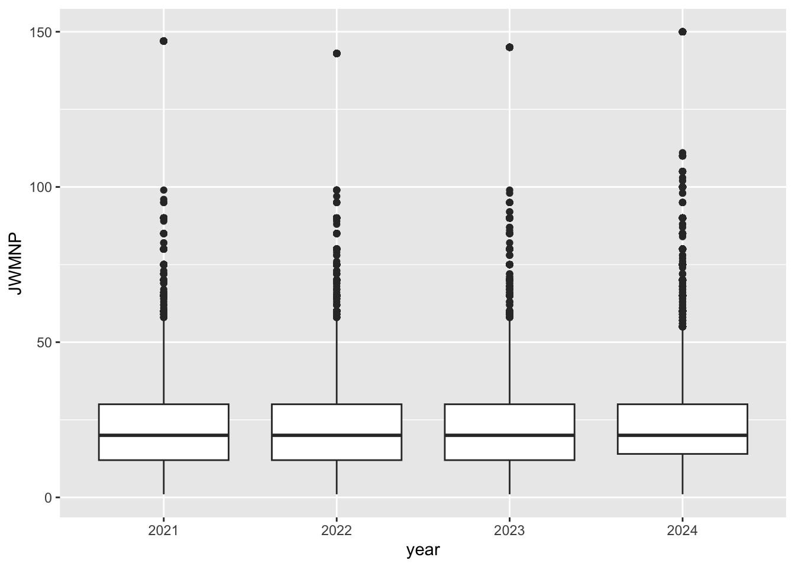
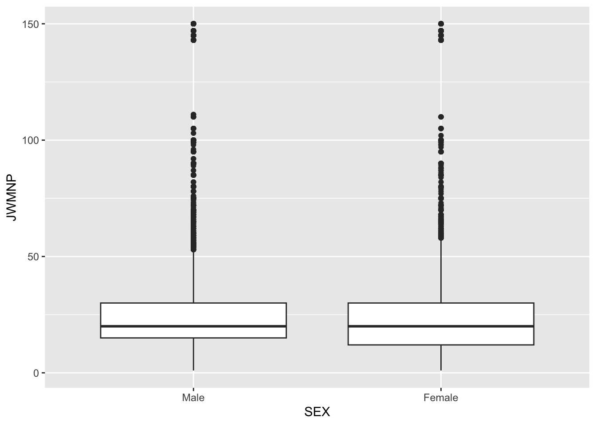

This project develops functions for retrieving, processing, summarizing, and visualizing data from the Census Public Use Microdata Sample (PUMS) API. Data from the 2021 through 2024 surveys will be used. The project first processes Census variable metadata, then develops functions to query and combine PUMS data, followed by custom methods for weighted summaries and graphical displays. The project concludes with an investigation of North Carolina travel time to work from 2021 through 2024, including comparisons by survey year and sex.
Part 1: Data Processing
Parsing Variable Values
The first step is to obtain the variable descriptions for the Census PUMS data. The variable metadata are available as JSON files for each survey year. These files contain information about the variables and, where applicable, the values and labels associated with categorical variables.
The code below begins by querying the 2024 variable metadata to examine the structure of the returned JSON data. A status code of 200 indicates that the request was successful.
# Load packages used for this documentlibrary(httr)library(lubridate)# URL for the 2024 PUMS variable metadataurl_2024 <-"https://api.census.gov/data/2024/acs/acs1/pums/variables.json"# Query the Census APIresponse_2024 <-GET(url_2024)# Check whether the request was successfulstatus_code(response_2024)
[1] 200
The returned JSON content is then parsed and examined to determine how the variable information is stored.
# Parse the JSON responsemetadata_2024 <-content(response_2024)# Examine the top-level structurenames(metadata_2024)
[1] "variables"
# Examine the metadata for the SEX variablemetadata_2024$variables$SEX
# Variables required for the projectvariables_2024 <-c("AGEP", "GASP", "GRPIP", "JWAP", "JWDP", "JWMNP","PWGTP", "FER", "HHL", "SCH", "SCHL", "SEX","STATE", "REGION", "DIVISION")# Check whether any required variables are missingvariables_2024[!variables_2024 %in%names(metadata_2024$variables)]
character(0)
All variables required for the 2024 portion of the project are present in the Census metadata.
Creating a Function to Parse Variable Values
After examining the structure of the 2024 variable metadata, a function is created to automate this process for the 2021 through 2024 survey years. The function identifies the appropriate state variable for each year, retrieves the corresponding JSON file, and extracts the value information for the variables required for this project.
# Function to retrieve variable values for a specified survey yearget_variable_values <-function(year) {# Check that a valid survey year was providedif (!year %in%c(2021, 2022, 2023, 2024)) {stop("Year must be 2021, 2022, 2023, or 2024.") }# Determine the appropriate state variable nameif (year %in%c(2021, 2022)) { state_variable <-"ST" } else { state_variable <-"STATE" }# Define the variables needed for the project variables <-c("AGEP", "GASP", "GRPIP", "JWAP", "JWDP", "JWMNP","PWGTP", "FER", "HHL", "SCH", "SCHL", "SEX", state_variable, "REGION", "DIVISION" )# Create the URL for the selected year url <-paste0("https://api.census.gov/data/", year,"/acs/acs1/pums/variables.json" )# Query and parse the variable metadata response <-GET(url)if (status_code(response) !=200) {stop("The Census API request was not successful.") } metadata <-content(response)# Create an empty list for the variable values variable_values <-list()# Extract the available values for each required variablefor (variable in variables) { variable_values[variable] <-list( metadata$variables[[variable]]$values$item ) }return(variable_values)}
The function is tested using the 2024 survey year, to ensure it produces the expected results.
# Test the function using the 2024 survey yearvariable_values_2024 <-get_variable_values(2024)# Examine the variables contained in the resulting listnames(variable_values_2024)
# Examine the values returned for SEXvariable_values_2024$SEX
$`1`
[1] "Male"
$`2`
[1] "Female"
Applying the Function to Parse Variable Values
The function is then applied to each of the four survey years to create a separate list of variable values for 2021, 2022, 2023, and 2024.
# Create variable value lists for each survey yearvariable_values_2021 <-get_variable_values(2021)variable_values_2022 <-get_variable_values(2022)variable_values_2023 <-get_variable_values(2023)variable_values_2024 <-get_variable_values(2024)# Combine the four yearly listsvariable_values <-list("2021"= variable_values_2021,"2022"= variable_values_2022,"2023"= variable_values_2023,"2024"= variable_values_2024)# Examine the survey years stored in the listnames(variable_values)
[1] "2021" "2022" "2023" "2024"
# Check the state variable used for each survey yearnames(variable_values$`2021`)
The results confirm that the function correctly uses “ST” for the 2021 and 2022 surveys and “STATE” for the 2023 and 2024 surveys.
# Save the variable value lists for later usesaveRDS( variable_values,file ="data/census_variable_values.rds")# Read the saved file to verify that it was created successfullyvariable_values_check <-readRDS("data/census_variable_values.rds")names(variable_values_check)
[1] "2021" "2022" "2023" "2024"
The saved object contains the variable-value information for each survey year and can be loaded later when categorical and geographic variables are converted to their appropriate labels.
Parsing API Data
The next step is to query the PUMS API for person-level data. Before creating a general function, a single API request is examined to understand the structure of the data returned by the Census API.
# Retrieve the Census API key from the environment, if availablecensus_key <-Sys.getenv("CENSUS_API_KEY")# Create an optional API key parameterkey_parameter <-""if (census_key !="") { key_parameter <-paste0("&key=", census_key )}# Create a sample 2024 PUMS API requestpums_url <-paste0("https://api.census.gov/data/2024/acs/acs1/pums","?get=SEX,AGEP,PWGTP","&for=state:37", key_parameter)# Query the Census APIpums_response <-GET(pums_url)# Check whether the request was successfulstatus_code(pums_response)
[1] 200
A status code of 200 indicates that the PUMS API request was successful.
The returned content is then parsed to examine how the observations are organized. A Census API key is optional for these queries. If an API key is available as an environment variable, it is added to the request; otherwise, the request is submitted without a key.
# Parse the API responsepums_content <-content( pums_response,as ="parsed",encoding ="UTF-8")# Examine the first few elements of the returned objectpums_content[1:3]
The PUMS API returns the column names as the first element of the parsed response and the observations as the remaining elements. A helper function is created to convert this structure into a tibble with the appropriate column names.
# Helper function to convert parsed PUMS content into a tibbleparse_pums_response <-function(pums_content) {# Extract the column names from the first element column_names <-unlist(pums_content[[1]])# Create an empty matrix for the returned observations data_matrix <-matrix(NA_character_,nrow =length(pums_content) -1,ncol =length(column_names) )# Add each observation to the matrixfor (i in2:length(pums_content)) { data_matrix[i -1, ] <-unlist( pums_content[[i]] ) }# Convert to a data frame pums_data <-as.data.frame( data_matrix,stringsAsFactors =FALSE )# Assign the column namesnames(pums_data) <- column_names# Convert to a tibble pums_data <- tibble::as_tibble(pums_data)return(pums_data)}# Test the helper functionpums_tibble <-parse_pums_response(pums_content)# Examine the resulting tibblehead(pums_tibble)
The helper function successfully converts the parsed API response into a tibble. At this stage, all returned variables are stored as character values; appropriate numeric, time, and categorical conversions will be performed in the subsequent data-processing function.
Creating a Helper Function for Time Variables
The JWAP and JWDP variables represent times using coded ranges rather than exact times. To convert these variables into usable time values, a helper function is created to parse each time range and return its midpoint. A fixed reference date is used so that the resulting values can be stored as date-time objects; only the time component is relevant for this project.
# Helper function to return the midpoint of a Census time rangeparse_time_midpoint <-function(time_ranges) {# Create an empty time vector for the results midpoint_times <-rep(as.POSIXct(NA, tz ="UTC"),length(time_ranges) )# Process each time rangefor (i inseq_along(time_ranges)) {# Leave missing time values as NAif (is.na(time_ranges[i]) || time_ranges[i] =="") {next }# Remove periods from a.m. and p.m. clean_range <-gsub("\\.","", time_ranges[i] )# Separate the beginning and ending times time_parts <-strsplit( clean_range," to " )[[1]]# Leave unexpected values as NAif (length(time_parts) !=2) {next }# Parse the beginning of the time interval start_time <-parse_date_time(paste("2000-01-01", time_parts[1]),orders ="Ymd IMp",tz ="UTC" )# Parse the end of the time interval end_time <-parse_date_time(paste("2000-01-01", time_parts[2]),orders ="Ymd IMp",tz ="UTC" )# Calculate the midpoint of the interval midpoint_times[i] <- start_time + (end_time - start_time) /2 }return(midpoint_times)}# Test the time midpoint helper functiontime_test <-c("10:20 a.m. to 10:24 a.m.","4:10 a.m. to 4:19 a.m.",NA)parse_time_midpoint(time_test)
[1] "2000-01-01 10:22:00 UTC" "2000-01-01 04:14:30 UTC"
[3] NA
Creating the Single-Year PUMS Query Function
The next step is to create a function that allows the user to specify the survey year, numeric and categorical variables, and geographic level to return. The function checks that the requested inputs meet the project requirements before building and submitting the API request. The user can select State, Division, or Region and can request either a specific geography or all values within that geography.
# Function to query one year of PUMS dataget_pums_data <-function(year =2024,numeric_vars =c("AGEP", "PWGTP"),categorical_vars ="SEX",geography ="State",geography_value =NULL) {# Define valid survey years valid_years <-c(2021, 2022, 2023, 2024)# Check that exactly one valid year was providedif (length(year) !=1||!year %in% valid_years) {stop("Year must be one of 2021, 2022, 2023, or 2024.") }# Define valid numeric variables valid_numeric_vars <-c("AGEP", "GASP", "GRPIP","JWAP", "JWDP", "JWMNP","PWGTP" )# Check that all numeric variables are validif (any(!numeric_vars %in% valid_numeric_vars)) {stop("One or more numeric variables are not valid.") }# Check that PWGTP is includedif (!"PWGTP"%in% numeric_vars) {stop("PWGTP must be included in numeric_vars.") }# Check that at least one numeric variable other than PWGTP is includedif (length(numeric_vars[numeric_vars !="PWGTP"]) <1) {stop("At least one numeric variable other than PWGTP must be included.") }# Define valid categorical variables valid_categorical_vars <-c("FER", "HHL", "SCH", "SCHL", "SEX" )# Check that at least one categorical variable was providedif (length(categorical_vars) <1) {stop("At least one categorical variable must be included.") }# Check that all categorical variables are validif (any(!categorical_vars %in% valid_categorical_vars)) {stop("One or more categorical variables are not valid.") }# Define valid geography levels valid_geographies <-c("State", "Division", "Region")# Check that exactly one valid geography level was providedif (length(geography) !=1||!geography %in% valid_geographies ) {stop("Geography must be State, Division, or Region.") }# Load the saved variable-value information geography_values <-readRDS("data/census_variable_values.rds" )# Select the metadata for the requested year year_values <- geography_values[[as.character(year)]]# Determine the geography variable and a default valueif (geography =="State") { api_geography <-"state"if (year %in%c(2021, 2022)) { metadata_geography <-"ST" } else { metadata_geography <-"STATE" } default_geography_value <-"37" } elseif (geography =="Division") { api_geography <-"division" metadata_geography <-"DIVISION" default_geography_value <-"5" } else { api_geography <-"region" metadata_geography <-"REGION" default_geography_value <-"3" }# Use the default geography value when none is suppliedif (is.null(geography_value)) { geography_value <- default_geography_value }# Check that only one geography value was providedif (length(geography_value) !=1) {stop("Only one geography value or 'all' may be specified.") }# Obtain the allowable geography codes from the saved metadata valid_geography_values <-names( year_values[[metadata_geography]] )# Allow the user to request all values for the geographyif (tolower(as.character(geography_value)) =="all") { api_geography_value <-"*" } else { geography_value <-as.character(geography_value)# Add a leading zero to one-digit state codesif ( geography =="State"&&nchar(geography_value) ==1 ) { geography_value <-paste0("0", geography_value) }# Check that the requested geography value is validif (!geography_value %in% valid_geography_values) {stop("The requested geography value is not valid.") } api_geography_value <- geography_value }# Combine the variables requested by the user variables <-unique(c(numeric_vars, categorical_vars) )# Convert the variable names into the format needed for the API variable_string <-paste( variables,collapse ="," )# Retrieve the Census API key from the environment, if available census_key <-Sys.getenv("CENSUS_API_KEY")# Create an optional API key parameter key_parameter <-""if (census_key !="") { key_parameter <-paste0("&key=", census_key ) }# Build the API URL pums_url <-paste0("https://api.census.gov/data/", year,"/acs/acs1/pums","?get=", variable_string,"&for=", api_geography, ":", api_geography_value, key_parameter )# Query the Census API response <-GET(pums_url)if (status_code(response) !=200) {stop("The Census API request was not successful.") }# Parse the returned JSON content pums_content <-content( response,as ="parsed",encoding ="UTF-8" )# Convert the returned content into a tibble pums_data <-parse_pums_response(pums_content)# Identify numeric variables that are not time variables regular_numeric_vars <- numeric_vars[!numeric_vars %in%c("JWAP", "JWDP") ]# Convert the regular numeric variables to numeric valuesfor (variable in regular_numeric_vars) { pums_data[[variable]] <-as.numeric( pums_data[[variable]] ) }# Identify the requested time variables time_vars <- numeric_vars[ numeric_vars %in%c("JWAP", "JWDP") ]# Convert requested time variables to midpoint time valuesfor (variable in time_vars) {# Obtain the Census time labels for the selected year time_labels <-unlist( year_values[[variable]] )# Match each Census code to its corresponding time range time_ranges <-unname( time_labels[pums_data[[variable]]] )# Convert each time range to its midpoint pums_data[[variable]] <-parse_time_midpoint( time_ranges ) }# Convert the selected categorical variables to labeled factorsfor (variable in categorical_vars) {# Obtain the value labels for the selected survey year value_labels <- year_values[[variable]]# Convert the variable to a factor using the Census labels pums_data[[variable]] <-factor( pums_data[[variable]],levels =names(value_labels),labels =unlist(value_labels) ) }# Add the census class to the returned tibbleclass(pums_data) <-c("census",class(pums_data) )return(pums_data)}# Test the single-year function using its default valuespums_test <-get_pums_data()# Examine the resulting tibblehead(pums_test)
# A tibble: 6 × 4
AGEP PWGTP SEX state
<dbl> <dbl> <fct> <chr>
1 23 60 Male 37
2 21 49 Male 37
3 20 24 Male 37
4 79 54 Female 37
5 18 79 Male 37
6 19 54 Female 37
# Examine the data types of the returned variablesstr(pums_test)
# Test the function using the Region geographypums_region_test <-get_pums_data(geography ="Region",geography_value ="3")# Examine the resulting tibblehead(pums_region_test)
# A tibble: 6 × 4
AGEP PWGTP SEX region
<dbl> <dbl> <fct> <chr>
1 25 103 Male 3
2 47 38 Male 3
3 35 55 Male 3
4 23 60 Male 3
5 43 8 Female 3
6 46 39 Male 3
The single-year function successfully validates the requested year, variables, and geography and returns the selected PUMS data as a tibble. The default call returns data for North Carolina, while the second test confirms that the function can also return data for a specified Census region.
The returned PUMS data are then converted to appropriate data types. Standard numeric variables are converted from character values to numeric values, while categorical variables are converted to factors using the year-specific Census labels stored in the variable metadata. Time variables are excluded from the standard numeric conversion because they require separate processing.
# Test the function with both Census time variablespums_time_test <-get_pums_data(numeric_vars =c("AGEP","JWAP","JWDP","PWGTP" ))# Examine the first few observationshead(pums_time_test)
# A tibble: 6 × 6
AGEP JWAP JWDP PWGTP SEX state
<dbl> <dttm> <dttm> <dbl> <fct> <chr>
1 23 NA NA 60 Male 37
2 21 NA NA 49 Male 37
3 20 NA NA 24 Male 37
4 79 NA NA 54 Female 37
5 18 NA NA 79 Male 37
6 19 NA NA 54 Female 37
# Examine the data types and census classstr(pums_time_test)
Creating a Function to Combine Multiple Survey Years
The single-year PUMS function can be used to retrieve data for more than one survey year. The function below allows the user to specify multiple years while retaining the same numeric, categorical, and geographic options. The single-year function will be called for each requested year, and the resulting data will then be combined into one tibble with a variable identifying the survey year.
# Function to retrieve and combine multiple years of PUMS dataget_pums_years <-function(years =c(2023, 2024),numeric_vars =c("AGEP", "PWGTP"),categorical_vars ="SEX",geography ="State",geography_value =NULL) {# Define valid survey years valid_years <-c(2021, 2022, 2023, 2024)# Check that at least one valid survey year was providedif (length(years) <1||any(!years %in% valid_years) ) {stop("Years must contain one or more of 2021, 2022, 2023, or 2024.") }# Create an empty list to store the yearly data yearly_data <-list()# Retrieve the PUMS data for each requested yearfor (current_year in years) { year_data <-get_pums_data(year = current_year,numeric_vars = numeric_vars,categorical_vars = categorical_vars,geography = geography,geography_value = geography_value )# Add the survey year to the data year_data$year <- current_year# Store the year's data in the list yearly_data[[as.character(current_year)]] <- year_data }# Combine the yearly tibbles combined_data <- dplyr::bind_rows(yearly_data)return(combined_data)}# Test the multi-year function using its default valuespums_years_test <-get_pums_years()# Examine the first few observationshead(pums_years_test)
# A tibble: 6 × 5
AGEP PWGTP SEX state year
<dbl> <dbl> <fct> <chr> <dbl>
1 18 62 Female 37 2023
2 93 94 Female 37 2023
3 22 73 Male 37 2023
4 39 63 Male 37 2023
5 19 50 Male 37 2023
6 39 41 Male 37 2023
# Examine the survey years includedtable(pums_years_test$year)
2023 2024
111920 114270
# Check the resulting classclass(pums_years_test)
[1] "census" "tbl_df" "tbl" "data.frame"
# Test the multi-year function across different state metadata yearspums_cross_year_test <-get_pums_years(years =c(2022, 2024))# Examine the survey years includedtable(pums_cross_year_test$year)
2022 2024
109230 114270
# Check the resulting structurestr(pums_cross_year_test)
# Check the resulting classclass(pums_cross_year_test)
[1] "census" "tbl_df" "tbl" "data.frame"
The cross-year test confirms that the multi-year function successfully combines survey years that use different underlying state metadata while preserving the expected variable types and census class.
Part 2: Generic Functions for Summarizing and Plotting
Creating a Custom Summary Method
The PUMS data use PWGTP as a person-level weight, meaning that each row may represent more than one person in the population. Therefore, summaries of the Census data should account for PWGTP rather than treating each row as representing one individual.
A custom summary method is created for objects with the census class. The method allows the user to specify numeric and categorical variables to summarize. If variables are not specified, the function identifies the appropriate variables from the Census tibble.
# Custom summary method for census objectssummary.census <-function( object,numeric_vars =NULL,categorical_vars =NULL) {# Identify default numeric variablesif (is.null(numeric_vars)) { numeric_vars <-character(0)for (variable innames(object)) {if (is.numeric(object[[variable]]) &&!variable %in%c("PWGTP","JWAP","JWDP","year" ) ) { numeric_vars <-c( numeric_vars, variable ) } } }# Identify default categorical variablesif (is.null(categorical_vars)) { categorical_vars <-character(0)for (variable innames(object)) {if (is.factor(object[[variable]]) ||is.character(object[[variable]]) || variable =="year" ) { categorical_vars <-c( categorical_vars, variable ) } } }# Create an empty list for numeric summaries numeric_summaries <-list()# Calculate weighted summaries for each numeric variablefor (variable in numeric_vars) { numeric_values <- object[[variable]] weights <- object$PWGTP# Keep observations with nonmissing values and weights keep <-!is.na(numeric_values) &!is.na(weights) numeric_values <- numeric_values[keep] weights <- weights[keep]# Calculate the weighted mean weighted_mean <-sum( numeric_values * weights ) /sum(weights)# Calculate the weighted standard deviation weighted_sd <-sqrt(sum( numeric_values^2* weights ) /sum(weights) - weighted_mean^2 )# Store the results for the variable numeric_summaries[[variable]] <-c(mean = weighted_mean,sd = weighted_sd ) }# Create an empty list for categorical summaries categorical_summaries <-list()# Calculate weighted counts for each categorical variablefor (variable in categorical_vars) { category_values <- object[[variable]] weights <- object$PWGTP# Keep observations with nonmissing values and weights keep <-!is.na(category_values) &!is.na(weights) category_values <- category_values[keep] weights <- weights[keep]# Identify the categories present categories <-unique(category_values)# Create an empty vector for the weighted counts weighted_counts <-numeric(length(categories) )names(weighted_counts) <-as.character( categories )# Calculate the weighted count for each categoryfor (i inseq_along(categories)) { weighted_counts[i] <-sum( weights[ category_values == categories[i] ] ) }# Store the results for the variable categorical_summaries[[variable]] <- weighted_counts }# Return all summaries as a named listreturn(list(numeric = numeric_summaries,categorical = categorical_summaries ) )}# Test the complete census summary methodsummary(pums_cross_year_test)
$numeric
$numeric$AGEP
mean sd
39.72205 23.23169
$categorical
$categorical$SEX
Male Female
10619992 11125005
$categorical$state
37
21744997
$categorical$year
2022 2024
10698973 11046024
# Test the summary method with user-specified variablessummary( pums_cross_year_test,numeric_vars ="AGEP",categorical_vars =c("SEX", "year"))
$numeric
$numeric$AGEP
mean sd
39.72205 23.23169
$categorical
$categorical$SEX
Male Female
10619992 11125005
$categorical$year
2022 2024
10698973 11046024
The custom summary method successfully produces PWGTP-weighted numeric and categorical summaries and allows the user to override the default variable selections.
Creating a Custom Plot Method
A custom plot method is created for objects with the census class. The user specifies one categorical variable and one numeric variable. A weighted boxplot is then created using PWGTP so that observations contribute according to their Census person weights.
# Custom plot method for census objectsplot.census <-function( x, cat_var, num_var, ...) {# Check that one categorical variable was providedif (length(cat_var) !=1) {stop("One categorical variable must be specified.") }# Check that one numeric variable was providedif (length(num_var) !=1) {stop("One numeric variable must be specified.") }# Check that the requested variables are in the dataif (!cat_var %in%names(x)) {stop("The categorical variable is not in the census data.") }if (!num_var %in%names(x)) {stop("The numeric variable is not in the census data.") }# Check that the categorical variable has an appropriate typeif ( cat_var !="year"&&!is.factor(x[[cat_var]]) &&!is.character(x[[cat_var]]) ) {stop("The categorical variable must be categorical.") }# Check that the numeric variable is numericif (!is.numeric(x[[num_var]])) {stop("The numeric variable must be numeric.") }# Treat year as categorical when used for plotting plot_data <- xif (cat_var =="year") { plot_data[[cat_var]] <-factor( plot_data[[cat_var]] ) }# Create the weighted boxplot census_plot <- ggplot2::ggplot( plot_data, ggplot2::aes(x =get(cat_var),y =get(num_var),weight = PWGTP ) ) + ggplot2::geom_boxplot() + ggplot2::labs(x = cat_var,y = num_var )return(census_plot)}# Test the census plot methodplot( pums_cross_year_test,cat_var ="SEX",num_var ="AGEP")

# Test year as the categorical plotting variableplot( pums_cross_year_test,cat_var ="year",num_var ="AGEP")

The custom plot method successfully creates PWGTP-weighted boxplots for both standard categorical variables and survey year while validating the requested variable types.
Investigation
To demonstrate the data-processing, summary, and plotting functions developed above, an investigation of North Carolina PUMS data from 2021 through 2024 is conducted. The analysis examines how travel time to work varies by sex and survey year.
# Retrieve North Carolina data for the investigationinvestigation_data <-get_pums_years(years =c(2021, 2022, 2023, 2024),numeric_vars =c("JWMNP","PWGTP" ),categorical_vars ="SEX",geography ="State",geography_value ="37")# Examine the first few observationshead(investigation_data)
# A tibble: 6 × 5
JWMNP PWGTP SEX state year
<dbl> <dbl> <fct> <chr> <dbl>
1 5 78 Male 37 2021
2 0 9 Female 37 2021
3 0 32 Female 37 2021
4 0 6 Female 37 2021
5 5 119 Male 37 2021
6 0 65 Male 37 2021
# Confirm the census classclass(investigation_data)
[1] "census" "tbl_df" "tbl" "data.frame"
Because travel time to work is not applicable to every PUMS observation, only observations with a positive JWMNP value are included in the travel-time analysis. The Census person weights are retained so that the remaining observations are summarized using PWGTP.
# Keep observations with a positive reported travel time to worktravel_data <- investigation_data[!is.na(investigation_data$JWMNP) & investigation_data$JWMNP >0,]# Confirm that the census class is retainedclass(travel_data)
[1] "census" "tbl_df" "tbl" "data.frame"
# Summarize travel time and the categorical variablessummary( travel_data,numeric_vars ="JWMNP",categorical_vars =c("SEX", "year"))
To examine whether travel time changed over the study period, the 2021 and 2024 observations are summarized separately. This allows the weighted mean and standard deviation of travel time to be compared between the first and last survey years included in the analysis.
# Create separate data sets for 2021 and 2024travel_2021 <- travel_data[ travel_data$year ==2021,]travel_2024 <- travel_data[ travel_data$year ==2024,]# Summarize 2021 travel timesummary( travel_2021,numeric_vars ="JWMNP",categorical_vars ="SEX")
$numeric
$numeric$JWMNP
mean sd
24.57827 21.03442
$categorical
$categorical$SEX
Male Female
2125458 1837846
$numeric
$numeric$JWMNP
mean sd
25.76062 21.32595
$categorical
$categorical$SEX
Male Female
2413491 2138016
The weighted mean travel time increased from approximately 24.6 minutes in 2021 to 25.8 minutes in 2024, an increase of about 1.2 minutes. The weighted standard deviations were similar in the two years, suggesting that the overall variability in travel time remained relatively consistent.
The distribution of travel time is next examined graphically. First, travel time is compared across all four survey years using the custom plot method. The boxplot incorporates PWGTP so that observations contribute according to their Census person weights.
# Compare travel time across survey yearsplot( travel_data,cat_var ="year",num_var ="JWMNP")

The boxplots show that the distributions of travel time are broadly similar across the four survey years. This is consistent with the numerical summaries, although the higher weighted mean observed in 2024 suggests a modest increase in travel time compared with 2021.
Travel time is also compared by sex using the custom plot method. This provides a second view of the travel-time distribution and demonstrates use of the plotting method with a different categorical variable.
# Compare travel time by sexplot( travel_data,cat_var ="SEX",num_var ="JWMNP")

The male and female boxplots show broadly similar travel-time distributions, with substantial overlap in their central ranges. Any visual differences between the two groups are modest relative to the overall spread in travel time.
Investigation Summary
Overall, the investigation found a modest increase in weighted mean travel time in North Carolina from approximately 24.6 minutes in 2021 to 25.8 minutes in 2024. The weighted standard deviations were similar, indicating that the overall variability in travel time remained relatively consistent. The year-based boxplots also showed broadly similar travel-time distributions across the four survey years. The sex-based boxplots also showed broadly similar travel-time distributions for male and female respondents.
Together, these analyses demonstrate how the API, summary, and plotting functions developed in this project can be used to retrieve, combine, summarize, and visualize Census PUMS data across multiple survey years.